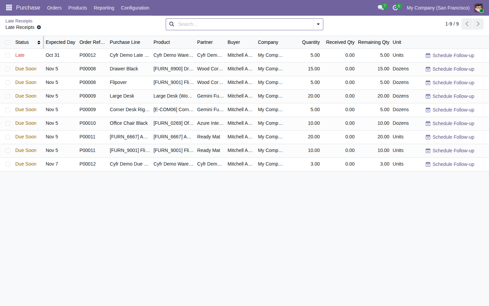

Find confirmed purchase lines with open warehouse receipts that are late or due soon.
Free, open-source Odoo 19 addon (LGPL-3). Requires the standard purchase_stock module.
Open Purchase → Orders → Late Receipts, choose a horizon, and scan open receipts.

Tested on Odoo 19 Community, including installation from the public ZIP. Results are scan snapshots; refresh after an order or receipt changes. Services and direct dropships are outside scope. Enterprise compatibility, large-catalog performance, buyer-role browser flow and interactive site accessibility remain unverified.